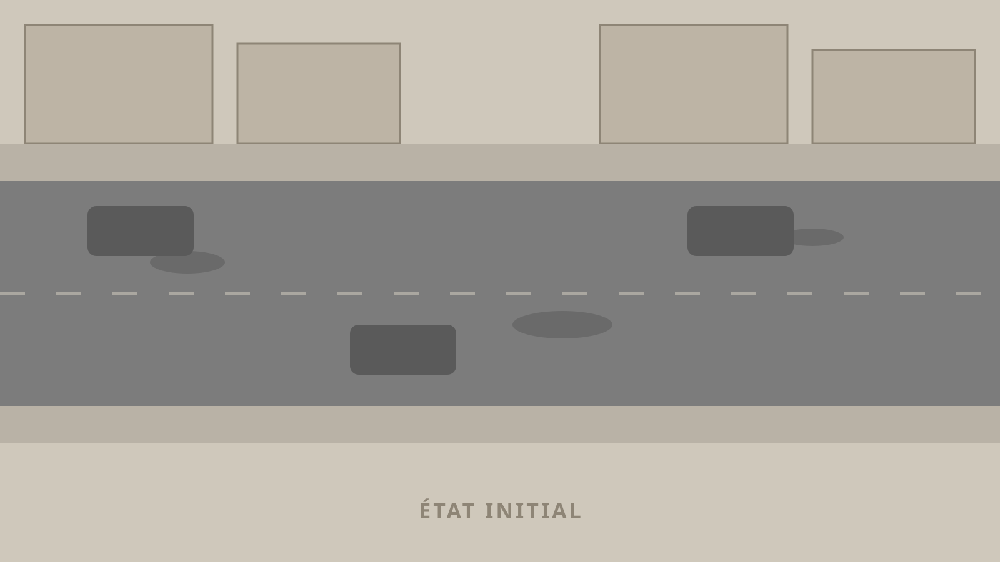

Nos réalisations
Une sélection de projets d'urbanisme, d'aménagement et d'infrastructures menés par nos équipes.
Avant / Après
Requalification de l'avenue principale
Faites glisser le curseur pour comparer l'état initial et le projet réaménagé : trottoirs élargis, piste cyclable, alignements d'arbres, passages piétons sécurisés et bandes végétalisées.
- +60 % d'espace dédié aux piétons
- 1,2 km de piste cyclable sécurisée
- Plus de 150 arbres plantés

Avant AprèsVotre projet sera notre prochaine réalisation
Confiez-nous vos études et projets d'aménagement : nous mettons notre expertise à votre service.